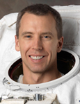

Lyndon B. Johnson Space Center
Houston, Texas 77058
|
National Aeronautics and Space Administration Lyndon B. Johnson Space Center Houston, Texas 77058 |
 |
Biographical Data |
||
Andrew J. Feustel (Ph.D.)
NASA Astronaut
PERSONAL DATA: Raised and educated in Lake Orion, Michigan. Married to the former Indira Devi Bhatnagar of Ontario. Drew enjoys auto restoration, guitar, water and snow skiing and Kart racing with their two boys. His parents both live in Michigan, and Indira’s parents reside in Ontario.
EDUCATION: Graduated from Lake Orion High School, Michigan. Associate Science degree, Oakland Community College, Michigan. B.S. in Solid Earth Sciences, Purdue University. M.S. in Geophysics, Purdue University. Ph.D. in Geological Sciences, specializing in Seismology, Queen’s University, Kingston, Ontario, Canada, 1995.
ORGANIZATIONS: Society of Exploration Geophysicists; American Geophysical Union; Sigma Phi Epsilon, Indiana Alpha Chapter, Purdue University; Association of Space Explorers; International Karting Federation.
SPECIAL HONORS: Graduated Cum Laude, Oakland Community College, Michigan. Purdue University: C.J. Newby Scholarship Award; Ned Smith Field School Scholarship Award; Amoco Fellowship; Chevron Fellowship. Queen’s University: Thesis Bursary Award, Deans Award, Graduate Award, McLaughlin Fellowship, Reinhardt Fellowship.
EXPERIENCE: While attending Oakland Community College, Dr. Feustel worked as an auto mechanic at International Autoworks, Ltd., Farmington Hills, Michigan, restoring 1950’s Jaguars. At Purdue University, Dr. Feustel served as a Residence Hall Counselor for 2 years at Cary Quadrangle for the Purdue University Student Housing organization. His summers were spent working as a commercial and industrial glazier near his home in Michigan. During his Master’s degree studies, Feustel worked as a Research Assistant and Teaching Assistant in the Earth and Atmospheric Sciences Department of Purdue University. His M.S. thesis investigated physical property measurements of rock specimens under elevated hydrostatic pressures simulating Earth’s deep crustal environments. While at Purdue, Feustel served for 3 years as Grand Prix Chairman and team Kart driver for Sigma Phi Epsilon Fraternity. In 1991, Feustel moved to Kingston, Ontario, Canada, to attend Queen’s University, where he worked as a Graduate Research Assistant and Graduate Teaching Assistant. Feustel’s Ph.D. thesis investigated seismic wave attenuation in underground mines and measurement techniques and applications to site characterization. For 3 years, he worked as a Geophysicist for the Engineering Seismology Group, Kingston, Ontario, Canada, installing and operating microseismic monitoring equipment in underground mines throughout Eastern Canada and the United States. In 1997, Feustel began working for the Exxon Mobil Exploration Company, Houston, Texas, as an Exploration Geophysicist, designing and providing operational oversight of land, marine and borehole seismic programs worldwide.
NASA EXPERIENCE: Selected as a Mission Specialist by NASA in July 2000, Dr. Feustel reported for training in August 2000. His training included 5 weeks of T-34 training at Naval Air Station VT-4, Pensacola, Florida. Following the completion of 2 years of training and evaluation, he was assigned technical duties in the Astronaut Office Space Shuttle and Space Station Branches.
Dr. Feustel served on the crew of STS-125, the final Space Shuttle mission to the Hubble Space Telescope. The mission successfully extended and improved the observatory’s capabilities through 2014. In completing his first space mission, Feustel logged almost 13 days in space and a total of 20 hours and 58 minutes in three EVAs.
On May 16, 2011, Feustel launched on Space Shuttle Endeavour’s final mission for STS-134 to the International Space Station. Feustel served as the lead space walker (EV1) and logged 21 hours and 20 minutes over 3 EVAs. The mission also delivered the Alpha Magnetic Spectrometer (AMS), a state-of-the-art cosmic ray particle physics detector designed to examine fundamental issues about matter and the origin and structure of the universe
SPACE FLIGHT EXPERIENCE: STS-125 Atlantis (May 11 to May 24, 2009) was the fifth and final Hubble servicing mission. The 19-year-old telescope spent 6 days in the Shuttle cargo bay undergoing an overhaul conducted by four spacewalkers over five daily spacewalks with the assistance of crewmates inside Atlantis. The spacewalkers overcame frozen bolts, stripped screws and stuck handrails. The refurbished Hubble Telescope now has four new or rejuvenated scientific instruments, new batteries, new gyroscope, and a new computer. The STS-125 mission was accomplished in 12 days, 21 hours, 37 minutes and 09 seconds, traveling 5,276,000 miles in 197 Earth orbits
STS-134 (ISS Assembly Flight ULF6) (May 16 to June 1, 2011) was the penultimate mission of NASA’s Space Shuttle Program. The mission marked the final flight of Space Shuttle Endeavour. This flight delivered the Alpha Magnetic Spectrometer and an ExPRESS Logistics Carrier to the International Space Station. The STS-134 mission included four spacewalks and was completed in 15 days, 17 hours, 38 minutes and 23 seconds, traveling 6,510,221 miles in 248 Earth orbits, touching down at Kennedy Space Center at 1:34:51 a.m. on June 1, 2011.
JUNE 2011